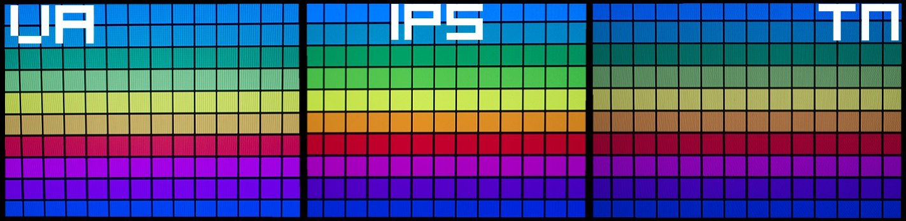
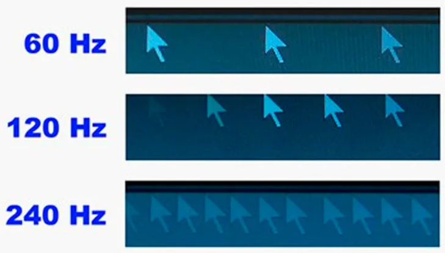
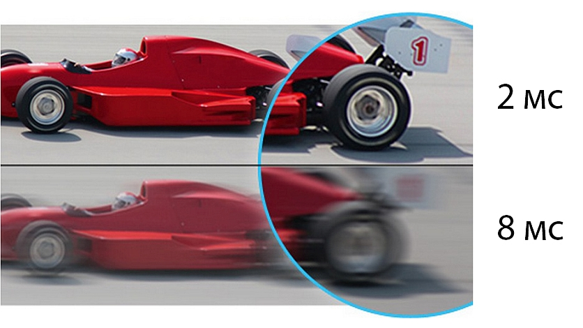

| ГЛАВНАЯ |
УСТРОЙСТВА
|
ОБ АВТОРЕ |
Основные критерии выбора монитора
1. Размер и разрешение экрана
Выбор монитора по размеру и разрешению экрана зависит от ваших конкретных потребностей и предпочтений.
| Маленький монитор (диагональ менее 24 дюймов) |
Средний монитор (диагональ от 24 до 32 дюймов) |
Большой монитор (диагональ свыше 32 дюймов) |
- Разрешение: 1920x1080 (Full HD) или 2560x1440 (QHD).
- Подходит для офисной работы, просмотра видео, интернет-серфинга или как дополнительный монитор к основному большему экрану.
|
- Разрешение: 2560x1440 (QHD) или 3840x2160 (4K UHD).
- Подходит для игр, фото- и видеообработки, мультимедийного контента или многозадачности.
|
- Разрешение: 3840x2160 (4K UHD) или выше.
- Подходит для профессиональной работы с графикой, видеомонтажа, игр, просмотра фильмов в высоком качестве или для создания многокомпьютерной рабочей станции.
|
Однако помимо размера и разрешения экрана также учитывайте свои предпочтения по плотности пикселей (PPI).
Более высокое PPI (пикселей на дюйм) обеспечивает более четкое и детализированное изображение.
Также учтите,что большие экраны требуют достаточного пространства на столе или стене для комфортного использования.
2. Тип матрицы
При выборе монитора по типу матрицы следует учитывать различия в отображении цветов, угла обзора и времени отклика.
| IPS (In-Plane Switching) |
TN (Twisted Nematic) |
VA (Vertical Alignment) |
OLED (Organic Light-Emitting Diode) |
- Преимущества: Хорошая цветопередача, широкий угол обзора, высокая точность отображения цветов.
- Рекомендуется для графического дизайна, фото- и видеообработки, профессиональной работы, просмотра контента с высокой цветовой точностью.
|
- Преимущества: Более низкое время отклика, более высокая частота обновления, более доступная цена.
- Рекомендуется для игр, быстрых динамичных сцен, когда важна высокая скорость отклика, но цветопередача и углы обзора не столь важны.
|
- Преимущества: Хороший контраст, глубокие черные цвета, хороший угол обзора (обычно лучше, чем у TN).
- Рекомендуется для просмотра фильмов, игр с высоким контрастом, но может иметь некоторые ограничения в отношении времени отклика.
|
- Преимущества: Богатые и насыщенные цвета, высокий контраст, пиксели светятся самостоятельно.
- Рекомендуется для высококачественного просмотра фильмов, графического дизайна, где требуется высокая цветовая точность и контраст.
|

При выборе типа матрицы обратите внимание на свои потребности и предпочтения в отношении
цветопередачи, угла обзора и времени отклика.
3. Частота обновления
| 60 Гц |
75 Гц |
120-144 Гц |
240 Гц и выше |
- Стандартная частота обновления для большинства мониторов.
- Обеспечивает достаточно плавное отображение для офисных задач, просмотра видео и интернет-серфинга.
- Хороший выбор для бюджетных и обычных пользователей, которым не требуется высокая скорость отклика.
|
- Немного повышенная частота обновления по сравнению с 60 Гц.
- Обеспечивает небольшой прирост в плавности отображения и снижает мерцание экрана.
- Подходит для повседневного использования, просмотра фильмов и игр, но не является оптимальным для профессиональной игровой или графической работы.
|
- Высокая частота обновления, специально предназначенная для геймеров и энтузиастов.
- Обеспечивает плавное и реактивное отображение быстродвижущихся объектов, снижает размытие и повышает реакцию на действия пользователя.
- Рекомендуется для игр, особенно шутеров от первого лица (FPS) и соревновательных онлайн-игр.
|
- Экстремально высокая частота обновления, предназначенная для профессиональных геймеров и элитных игровых соревнований.
- Обеспечивает максимально плавное отображение, уменьшает размытие движения и повышает реакцию на действия в играх.
- Лучший выбор для профессиональных игроков, особенно в соревновательных играх, где каждая миллисекунда имеет значение.
|

Учтите, что для использования более высоких частот обновления может потребоваться мощное аппаратное обеспечение
компьютера для достижения высокой производительности и FPS.
4. Время отклика
При выборе монитора по времени отклика следует учитывать требования вашей работы или игровых предпочтений,
особенности отображаемого контента и желаемый уровень плавности движения.
| 1 мс и менее |
1-4 мс |
5 мс и менее |
5-8 мс |
8-12 мс и выше |
- Экстремально низкое время отклика, обеспечивающее максимальную плавность движения.
- Идеально подходит для профессиональных геймеров и энтузиастов, которым требуется наиболее точная и мгновенная реакция.
- Особенно полезно для игр с быстрыми движениями и соревновательных сценариев.
|
- Очень низкое время отклика, идеальное для игр и динамичного контента.
- Обеспечивает быстрое переключение пикселей и уменьшает размытие движения.
- Рекомендуется для геймеров, особенно в соревновательных жанрах, где важна высокая реакция и точность.
|
- Короткое время отклика, обеспечивающее хорошую четкость и плавность отображения.
- Подходит для повседневных задач, просмотра видео, работы с текстом и стандартных игр.
- Хороший выбор для большинства пользователей среднего уровня.
|
- Умеренное время отклика, обычно встречающееся на большинстве обычных мониторов.
- Подходит для повседневного использования, офисной работы, просмотра видео, фильмов и игр среднего уровня.
- Могут быть некоторые следы размытия движения в быстрых сценах или при активной игре.
|
- Более высокое время отклика, которое может быть обусловлено особенностями определенных технологий мониторов.
- Могут наблюдаться более заметное размытие движения и следы в быстрых сценах или играх.
- Обычно подходят для повседневного использования, просмотра контента низкой интенсивности или работы, где точность и плавность движения не являются приоритетными.
|

Важно отметить, что время отклика - это только один из факторов, определяющих качество отображения монитора.
Частота обновления, разрешение, тип матрицы и другие параметры также влияют на общую производительность и качество изображения.
Поэтому при выборе монитора рекомендуется рассмотреть все эти аспекты в сочетании с вашими конкретными потребностями и бюджетом.
5. Интерфейсы подключения
Выбор монитора по типу подключения зависит от совместимости с вашим компьютером или устройством,
а также от предпочтений в отношении качества сигнала и возможностей подключения.
| HDMI (High-Definition Multimedia Interface) |
DisplayPort |
DVI (Digital Visual Interface) |
VGA (Video Graphics Array) |
- Наиболее распространенный тип подключения.
- Поддерживает передачу высокого разрешения видео и аудио сигнала.
- Идеально подходит для подключения к компьютерам, игровым консолям, медиаплеерам, телевизорам и другим устройствам современной цифровой техники.
|
- Технология передачи видео- и аудиосигнала высокого разрешения.
- Предлагает больше пропускной способности по сравнению с HDMI.
- Широко используется в профессиональных настройках, игровых мониторах и системах многоканального подключения.
|
- Цифровой интерфейс передачи видеосигнала.
- Имеет различные варианты подключения, включая DVI-D (цифровой), DVI-A (аналоговый) и DVI-I (цифровой и аналоговый).
- Обычно используется с компьютерами, мониторами и проекторами, особенно в старших моделях.
|
- Аналоговый интерфейс передачи видеосигнала.
- Широко используется в старых компьютерах, мониторах и проекторах.
- Обеспечивает базовое качество сигнала, но может иметь ограничения в передаче высокого разрешения.
|